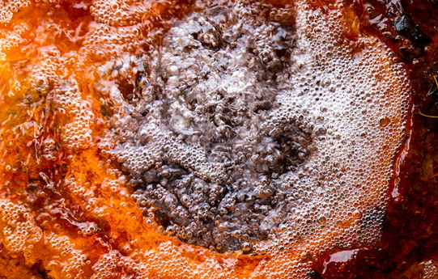

Wonders of Soda Springs
Towns as tiny as Soda Springs should count themselves lucky if they have one special attraction or unique characteristic that brings in tourists. But Soda Springs lays claim to at least three.
The settlement of Soda Springs got its start as an oasis along the Oregon Trail, eagerly anticipated among emigrants for its thousands of fresh mineral water springs. A couple of enterprising pioneers recognized the commercial potential of these springs, and began bottling the water under the name of “Idanha”. This was before the days before water could be artificially carbonated, and the lightly bubbly Idanha was a hit, winning the top prize at Chicago’s World Fair in 1893, and again in Paris in 1900.
There are multiple places around town to try out the water, which is still bubbling unabated out of the ground. We took a cup to the Hooper Springs to sample it. Not bad, it tastes like lightly carbonated bottled water, a bit sweeter and more mineralized.
Not far away from Hooper Springs (and in fact, too close for comfort) is the Monsanto Phosphorus Plant. Soda Springs sits on top of one of the largest phosphate deposits in the entire world, and Monsanto’s large-scale mining and purification plant has changed the town’s landscape. Literally.
Others wonders of Soda Springs